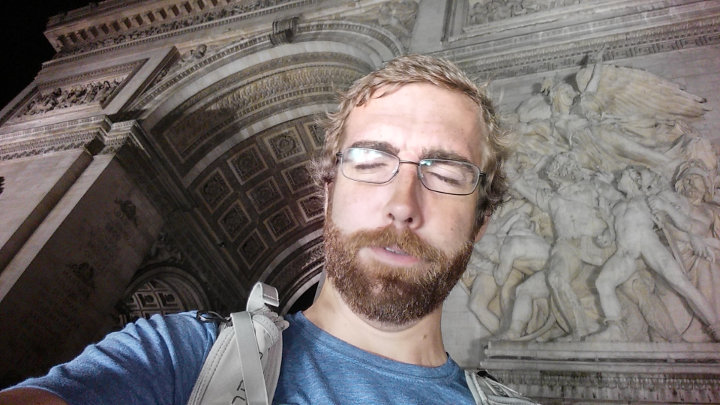
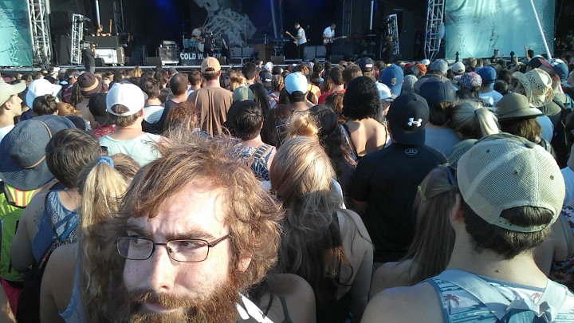
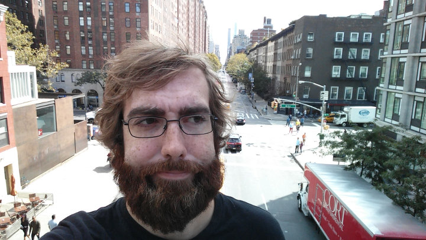
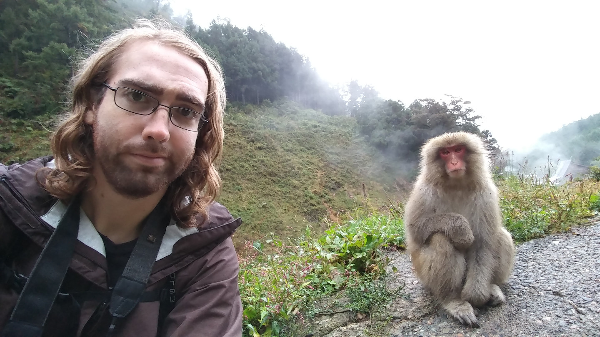

Should've stayed home today
...
Eiffel Tower. Paris, France
Colosseum. Rome, Italy
Arc de Triomphe. Paris, France (2016)
Arc de Triomphe. Paris, France (2018)
World Trade Center. New York, New York
Zilker Park. Austin, Texas
Chelsea. New York, New York
Gullfoss. Southwest Iceland
地獄谷野猿公苑 (Jigokudani Yaen Kōen). Yamanouchi, Japan
中禅寺湖 (Lake Chūzenji). Nikkō, Japan